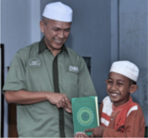
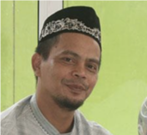
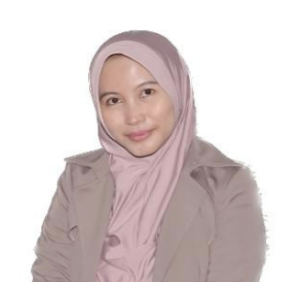
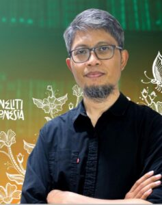

Vision & Mission
- Membantu dan turut serta mensukseskan program pemerintah Republik Indonesia dalam bidang Pendidikan untuk mencapai tujuan Nasional yaitu membangun generasi terdidik yang berakhlak mulia.
- Mendirikan lembaga pendidikan yang kompeten, berkualitas tinggi, dan terjangkau oleh segala lapisan masyarakat.
- Mengenalkan, menumbuhkan, dan membudayakan pada anak didik rasa cinta dan komitmen terhadap Al-Qur'an sebagai tuntunan hidup umat Islam berasaskan akidah Islam.
- Mengembangkan sistem belajar yang modern dan paripurna dengan memadukan Tahfizh (penghafalan dan penghayatan) Qur'an, Sains, Kepemimpinan (Adab), serta kemampuan literasi berkualitas yang meliputi Bahasa Indonesia, Arab dan Inggris.
- Mengembangkan potensi anak secara menyeluruh dan seimbang sesuai minat, kebutuhan, tingkat perkembangan, dan kemampuan anak.
Our Story
Setelah menimba ilmu dan merasakan pengalaman mengajar di Islamic schools di Amerika Serikat, Dr. Erma Pawitasari, M.Ed berkeinginan kuat pulang ke tanah air untuk memperbaiki dunia pendidikan Indonesia. Sekolah-sekolah internasional konvensional sering menghadirkan 3 masalah: biaya Rp250–300 juta/tahun, budaya Barat yang tidak sesuai syariat, serta minimnya pendidikan Islam.
Untuk itulah Mafatih Islamic School of Kalibata didirikan dengan memadukan pendidikan ala pesantren dan standar sekolah internasional—membina Tahfizh, Sains, Leadership, serta Bahasa Inggris dan Arab dengan sistem pembiayaan efisien:
- Tidak ada kewajiban membeli buku baru; siswa kurang mampu mendapat pinjaman buku bekas layak pakai dari kakak kelas.
- Tidak ada kewajiban membeli seragam atau katering sekolah; tersedia donasi seragam layak pakai dan makan siang boleh dibawa dari rumah.
- Infaq Pembangunan & Biaya Kegiatan Tahunan boleh diangsur; SPP subsidi diberikan bagi keluarga kurang mampu/anak yatim.
- 5 Jalur Pendidikan Adab: Nasehat, Keteladanan, Materi buku ajar, Pembiasaan, serta Reward and punishment.
The Founders

Bpk. Ust. H. M. Ichsan Salam, S.TPendiri Badan Wakaf Alqur'an (BWA) · Pendiri Pesantren Mafatih · Owner PT. Cita Alam Lestari

Ust. Yan Sofyan, M.TPendiri SDIT Mafatih Bekasi · Pendiri Pesantren Mafatih Purwakarta

Dr. Hj. Erma Pawitasari, S.Kom, M.EdNarasumber Serambi Islami TVRI · Trainer & RnD Surya Institute · Dosen UIKA & IIQ Jakarta · Pengurus FORDISI · Eks Guru di Texas & Boston USA

Bpk. Ust. H. Ahmad Rusdan H. Utomo, Ph.DLecturer Magister Biomedik Univ. YARSI · Postdoctoral Fellowship Harvard Medical School USA · Senior Consultant Dharmais & KalGen · Head of Lab Kalbe Genomics · Assessor EMQN
Finance (Sumber Pendanaan Yayasan)
- Zakat, infak, dan sedekah dari para pendiri, pengurus yayasan, dan masyarakat sekitar.
- Pembiayaan dari Program Orang Tua Asuh.
- Biaya pendidikan yang dibayarkan orang tua/wali murid.
- Kerja sama dengan Pemda DKI Jakarta (pemeriksaan rutin Puskesmas Kalibata, fasilitas bus sekolah, dll.).
- BOP (Bantuan Operasional Pendidikan) dan BOS bagi siswa kurang mampu.